Digitalfire will shut down on June 26. I no longer have the authority to grant exemption to a section in the Terms and Conditions of using material in the Insight-Live account from which I built the source material. While there are ways to comply with the take-down order, they are beyond my means because of how complex and large the site has become in the past 35+ years. It has been a wild ride for a shy prairie boy, thanks to everyone for your support. Insight-live.com is not affected by this.
A type of ceramic glaze in which the surface variegates and crystallizes on cooling in the presence of titanium and iron (usually sourced by rutile)
Key phrases linking here: rutile blue glazes, floating blue, rutile glazes, rutile glaze, rutile blue - Learn more
Many fluid melt glazes will do magic things (e.g. variegate) with the addition of rutile (usually less than 5%). The effects are often amplified when other colorants are present (especially iron and tin) and when plenty of SiO2 is available (especially from fine-particled silica, e.g. 325 mesh). The classic rutile blue effect happens when a glaze melt runs in rivulet patterns. The melt fluidity needed usually means that Al2O3 levels in the chemistry must be kept down (the fact that GA6-A works as a base and GA6-B does not is an example of this). Employment of this effect is common across a wide range of stoneware temperatures in both oxidation and reduction. Rutile can produce vibrant blues without expensive cobalt (green colors are also common). The TiO2 in the rutile is key to this (thus "rutile blues" are actually "titanium blues"). The visual character of individual rutile blue glazes is thus a combination of multiple complex chemical and physical mechanisms that reach deep into the glass - they are difficult to quantify. Consider an example: Two rutile blue glazes can appear very similar in sunlight but look very different in artificial or dim light (or vice versa). It is thus no wonder these are most popular with potters who can better endure variations - and crowbar the color with a little cobalt if needed.
The melt fluidity often employed means that rutile blue glazes can often be problematic, blistering and crawling are common issues. It does not seem intuitive that a glaze having a mobile and fluid melt should have such defects, they should heal. However, glaze melts are a liquid thus they can have surface tension. Thus, they can form and hold bubbles that do not break easily - even if the firing is held at top temperature. MgO, for example, is a contributor to this, it has a high surface tension and is common in rutile blue glazes. One solution to this blistering is slower cooling, all the way down to 1400F if needed (e.g. the C6DHSC firing schedule). However, a problem with this approach may be excessive crystallization of the surface, even turning it matte. Another option is drop-and-hold firing (e.g. the PLC6DS schedule): Cool rapidly to a temperature at which the increasing viscosity of the melt overcomes the surface tension and the bubbles break. Chosen carefully, this temperature can still offer sufficient melt fluidity for the defects to heal (cooling can proceed rapidly after that). A third possibility for recipes exhibiting excessive melt mobility is to reduce the flux that creates it (usually boron). For example, if the glaze contains 20% frit, reduce it to 15% as a test.
Perhaps the most popular all rutile glazes at middle-temperature oxidation is one called “Floating Blue”, our code number G2826R. Unfortunately, it has a reputation for being erratic and troublesome to use. We have done lots of work trying to improve it, especially substituting the colouring oxides into other base glaze recipes and adjusting the chemistry of existing recipes.
As noted, rutile glazes are among the most troublesome to keep consistent and defect-free (the greater the percentage the greater the issues). Many producers depend heavily on the consistency of their rutile supply - but this confidence can be misplaced. Rutile sources can vary considerably in mineralogy and particle size, this not only affects the subtleties of the appearance of a glaze but can result in a complete loss of its visual character. Rutile is an impure source of titanium, it is the titanium that produces the variegation. The impurities in rutile, especially iron oxide, also contribute to the appearance of many glazes. Pure titanium dioxide will work as a substitute for rutile in many glazes (although in a lesser percentage). Where needed, a small amount of iron oxide can be added for an even closer result (requires testing, too much and the rutile blue effect can be lost). When blue or green coloration is lost small amounts of cobalt or copper (or blue or green stains) can also be added to restore them.
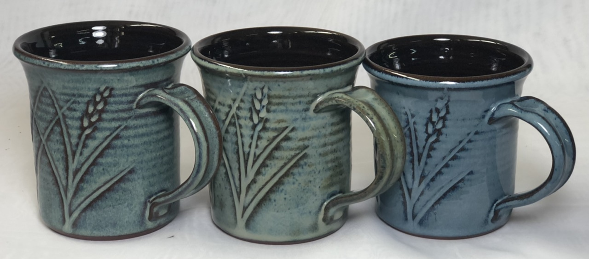
This picture has its own page with more detail, click here to see it.
These are GA6-C Alberta Slip floating blue (left), AMACO Potter's Choice PC-20 Blue Rutile (center), GR6-M Ravenscrag floating blue (right). The clay is M390. The firing is cone 6, the schedule is C6DHSC (drop-and-hold, slow cool). All of these recipes are descendants and improvements of the 50-year-old original G2826R floating blue. The inside glaze on these mugs is GA6-B. The two on the left develop the blue color because of the slow cool, the one on the right works on fast-cool (because it contains cobalt). Remember, floating blue is a rutile blue glaze, as such it works best on dark-burning bodies.
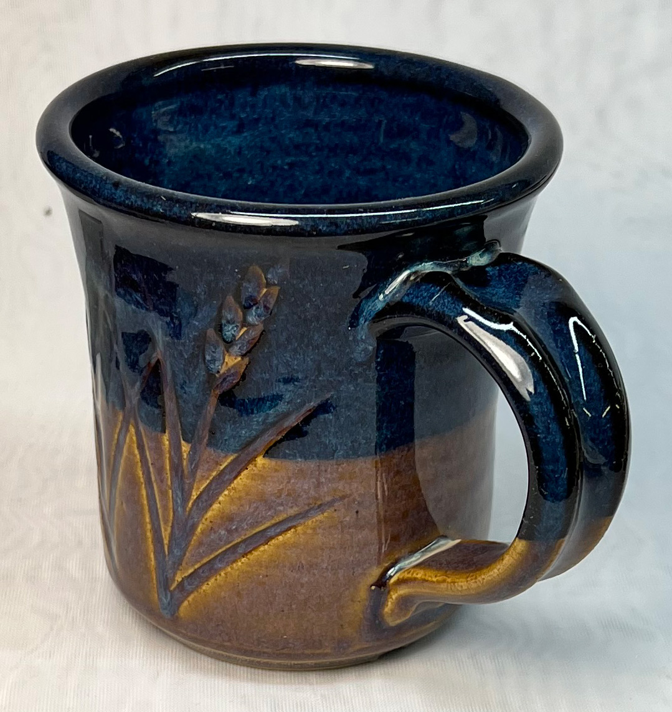
This picture has its own page with more detail, click here to see it.
The glaze recipe is GA6-C. The firing schedule is C6DHSC. The black engobe (applied inside and halfway down the outside) is L3954B. The clay body is Plainsman M370. This demonstrates how different this glaze fires on a white porcelain (bottom half outside) and a black porcelain (the engobed top half). The engobe is normally used on bodies having lower firing shrinkage, so its firing shrinkage can be increased by adjusting the percentage of nepheline syenite in the recipe (e.g. 5% more and 5% less silica).
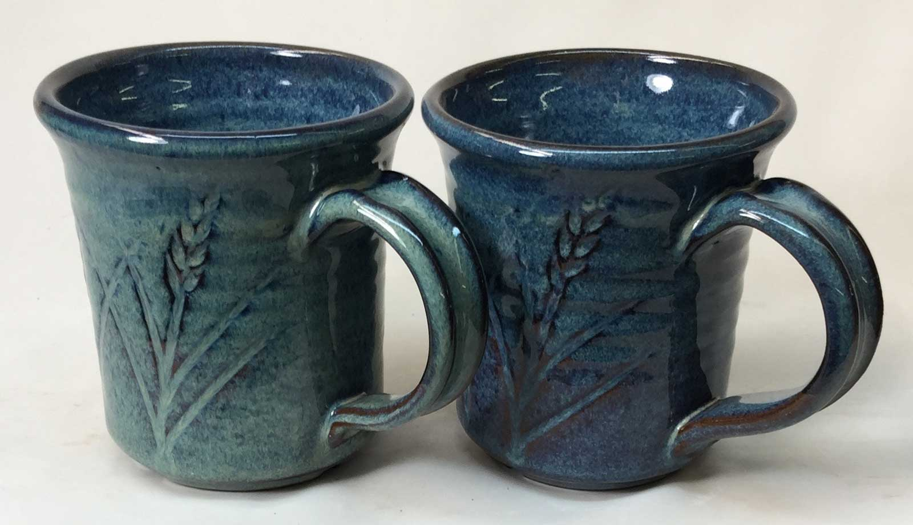
This picture has its own page with more detail, click here to see it.
GA6-C (left) and GA6-E (right) at cone 6 oxidation. The E version adds 4% spodumene onto the 4% rutile in the C (the base is 80% Alberta Slip and 20% frit 3134). The spodumene eliminate the overly whitish areas that can appear. This glaze requires the "Slow Cool (Reactive Glazes)" firing schedule. It looks the best on dark bodies.
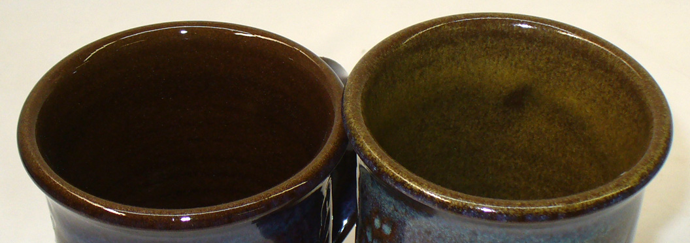
This picture has its own page with more detail, click here to see it.
These two mugs have the Alberta Slip base cone 6 GA6-A glaze on the inside and GA6-C on the outside (it just adds rutile to GA6-A). The left one was cooled normally (kiln off at cone 6 after soak). For the mug on the right, the kiln was soaked for half an hour at 1800F on the way down to develop the rutile blue glaze on the outside. But during this period crystallization occurred on the inside also. This provides an insight into my this GA6-A base hosts floating blue effects but GA6-B does not: The amount of Al2O3 is much lower, that improves melt fluidity and acts as a catalyst for crystallization.
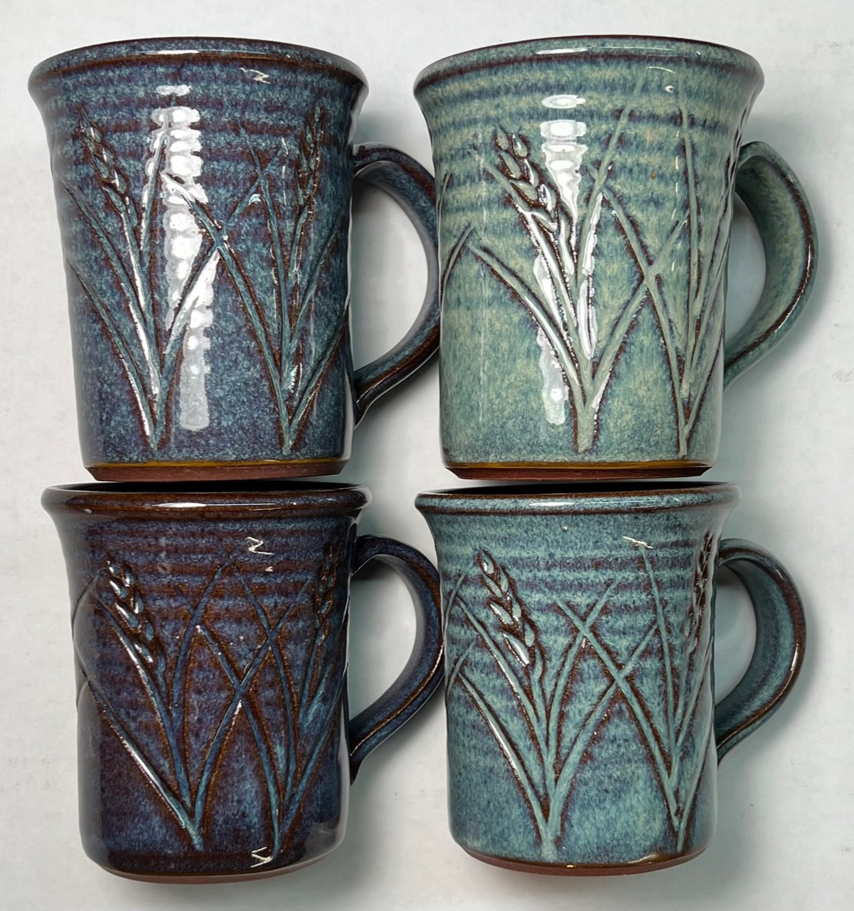
This picture has its own page with more detail, click here to see it.
Rutile blue glazes are actually titanium blues (because rutile mineral is an impure source of TiO2 and Fe2O3). The iron and titanium in the rutile react to form the floating blue effect. The GA6-C recipe has always relied on a 4% rutile addition. Its GA6-A base recipe contains significant iron (because of the 80% Alberta Slip), so could titanium oxide deliver the same floating blue effect? Yes.
These mugs are M390 clay. The top left one is the standard GA6-C (with rutile) fired using the C6DHSC slow-cool firing schedule (the bottom left normal cool PLC6DS schedule produces little color). But the ones on the right switch the 4% rutile for titanium dioxide (the L4655 recipe). The top right was fired using the slow cool, the bottom right was the normal cool schedule.
Titanium thus seems more consistent and reliable material than rutile. An excellent blue color is produced even without a slow cool (lower right).
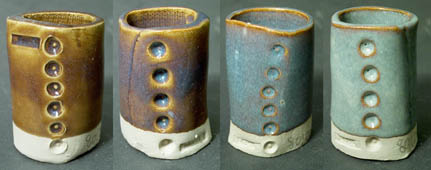
This picture has its own page with more detail, click here to see it.
2, 3, 4, 5% rutile added to an 80:20 mix of Alberta Slip:Frit 3134 at cone 6. This variegating mechanism of rutile is well-known among potters. Rutile can be added to many glazes to variegate existing color and opacification. If more rutile is added the surface turns an ugly yellow in a mass of titanium crystals.
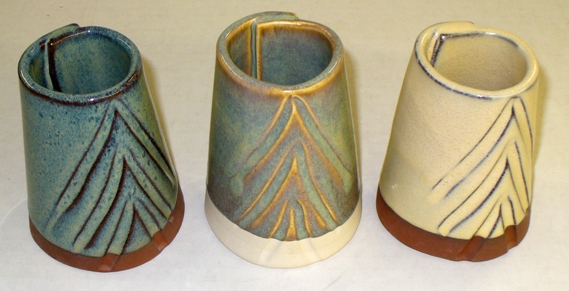
This picture has its own page with more detail, click here to see it.
Rutile variegates glaze surfaces. But it also opacifies at higher percentages. The blue effect is a product of crystallization that occurs during cooling, it is thus dependent on a slower cooling cycle, especially above 1400F. This is GA6-C Alberta Slip glaze with 4, 5 and 6% rutile. At 6% the rutile crystallization has advanced to the point of completely opacifying the glaze. At 5% the blue is still strong, even on a buff burning body. The loss of color occurs suddenly, somewhere between 5 and 6 percent. Rutile chemistry varies from batch to batch. The blue develops differently on different bodies. So do you want to play "at the edge", with 5% in the glaze, in view of these other factors and the finicky firing curve needed. Change in any of which could push it into the blueless zone?
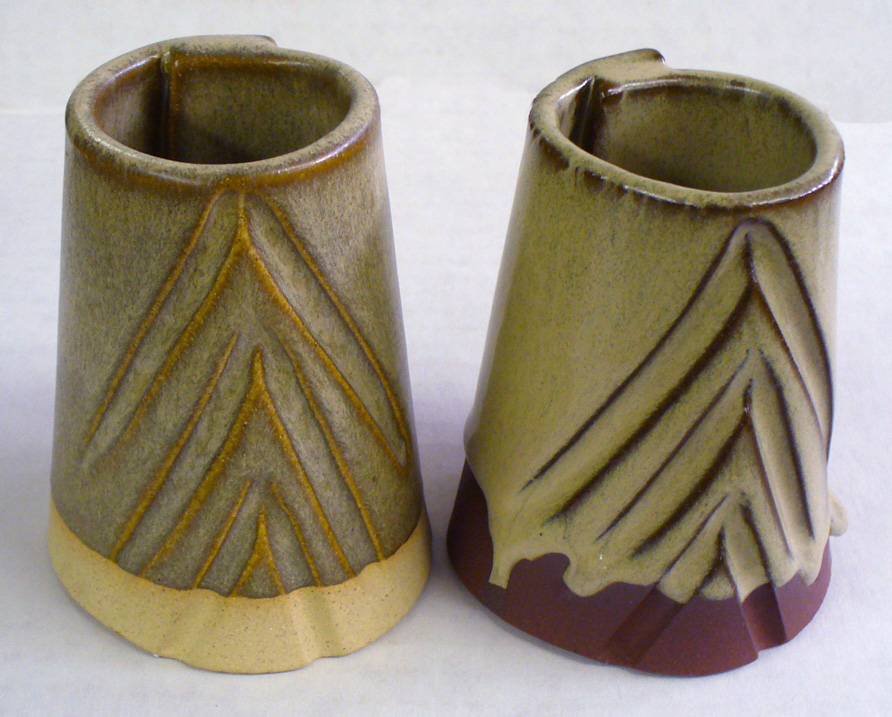
This picture has its own page with more detail, click here to see it.
The 80:20 base GA6-A Alberta slip base becomes oatmeal when over saturated with rutile or titanium (left: 6% rutile, 3% titanium; right: 4% rutile, 2% titanium). That oatmeal effect is actually the excess titanium crystallizing out of solution into the melt as the kiln cools. Although the visual effects can be interesting, the micro-crystalline surface is unpleasant to touch and susceptible to cutlery marking and leaching (not as stable or durable as in glazes which are pure amorphous glass). For functional ware, rutile glazes are among the most troublesome to keep consistent, one way of avoiding problems is keeping the percentage as low as possible while still getting the desired variegation (of course that will vary depending on the melt fluidity of the glaze, more highly fluid ones can handle more rutile or titanium).
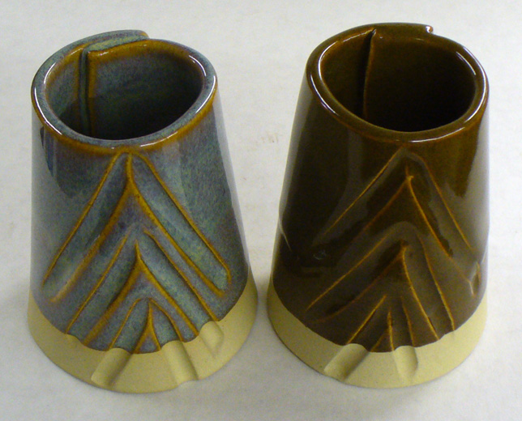
This picture has its own page with more detail, click here to see it.
These glazes are both 80% Alberta Slip, but the one on the right employs 20% Ferro Frit 3249 accelerate the melting (whereas the left one has 20% Frit 3134). Even though Frit 3249 is higher in boron and should melt better, its high MgO stiffens the glaze melt denying the mobility needed for the crystal growth.
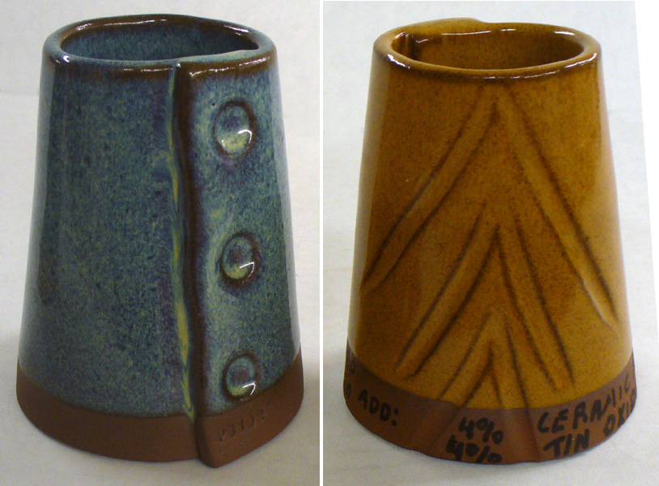
This picture has its own page with more detail, click here to see it.
This is Alberta Slip (GA6C) on the left. Added frit is melting the Alberta Slip clay to it flows well at cone 6 and added rutile is creating the blue variegated effect (in the absence of expensive cobalt). However GA6D (right) is the same glaze with added Tin Oxide. The tin completely immobilizes the rutile blue effect, it brings out the color of the iron (from the rutile and the body).
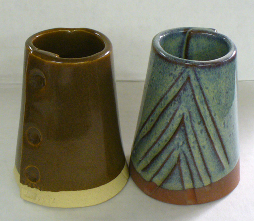
This picture has its own page with more detail, click here to see it.
The rutile blue variegation effect is fragile. It needs the right melt fluidity, the right chemistry and the right cooling (during firing). This is Alberta Slip GA6C recipe on the right (normal), the glaze melt flows well due to a 20% addition of Ferro Frit 3134 (a very low melting glass). On the left Boraq has been used as the flux (it is a calcium borate and also melts low, but not as low as the frit). It also contains significant MgO. These two factors have destroyed the rutile blue effect!
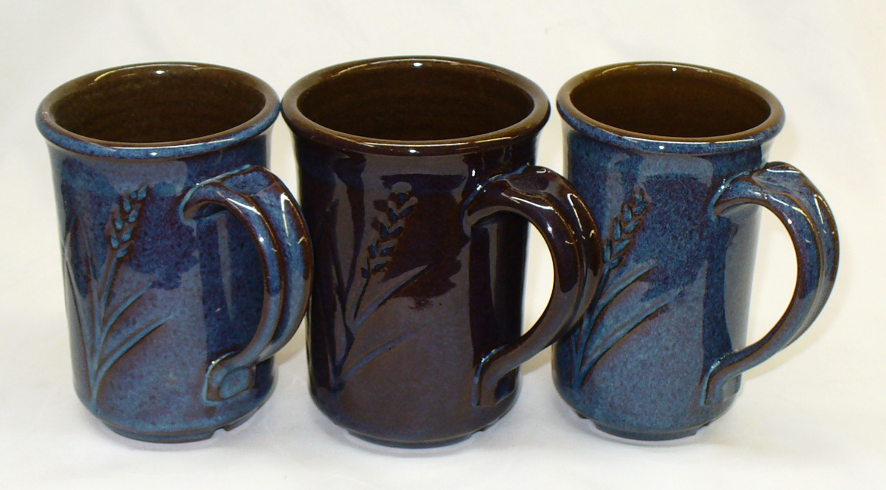
This picture has its own page with more detail, click here to see it.
Left: 4% rutile in the Alberta Slip:frit 80:20 base. This glaze has been reliable for years. But suddenly it began firing like the center mug! Three 5 gallon buckets of glaze (of differing ages) all changed at once. We tried every combination of thickness, firing schedule, clay body, ventilation, glazing method on dozens of separate pieces with no success to get the blue back. Even mixed a new batch, still no color. Finally the 'crow bar' method worked, 0.25% added cobalt oxide (right mug). It is identical ... amazing. It is not the same mechanism to get the color and it is not exactly the same, but worked while we figured out the real issue: the firing schedule (the secret turned out to be cooling, soaking, then slow cooling to 1400F).
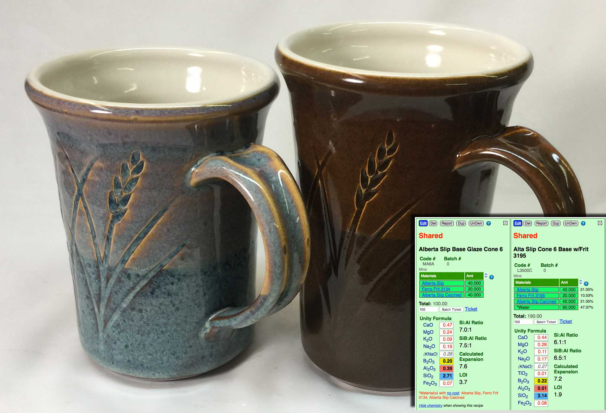
This picture has its own page with more detail, click here to see it.
These two cone 6 mugs have the same glaze recipe: GA6A Alberta Slip base. 4% rutile has been added to each. They were fired in the same kiln using a slow cool schedule. The recipes and chemistry are shown below (the latter gives a clue as to why there is no blue on the right). The mug on the left is the traditional recipe, 80:20 Alberta Slip:Ferro Frit 3134. Frit 3134 melts at a very low temperature and a key reason for that is its near-zero Al2O3 content. Al2O3 in glazes stiffens the melt and imparts durability to the fired glass (normally we want adequate levels in functional glazes). When Al2O3 levels are low and cooling is slower molecules in the stiffening glass have much more freedom to move and orient themselves in the preferred way: crystalline (fast cooling produces a glass). Thus the rutile in the glaze on the left has had its way, dancing as the kiln cooled, producing all sorts of interesting variegated visual effects. The glaze on the right employs Ferro Frit 3195. It has lots of Al2O3 and has contributed enough to stop the rutile dead.
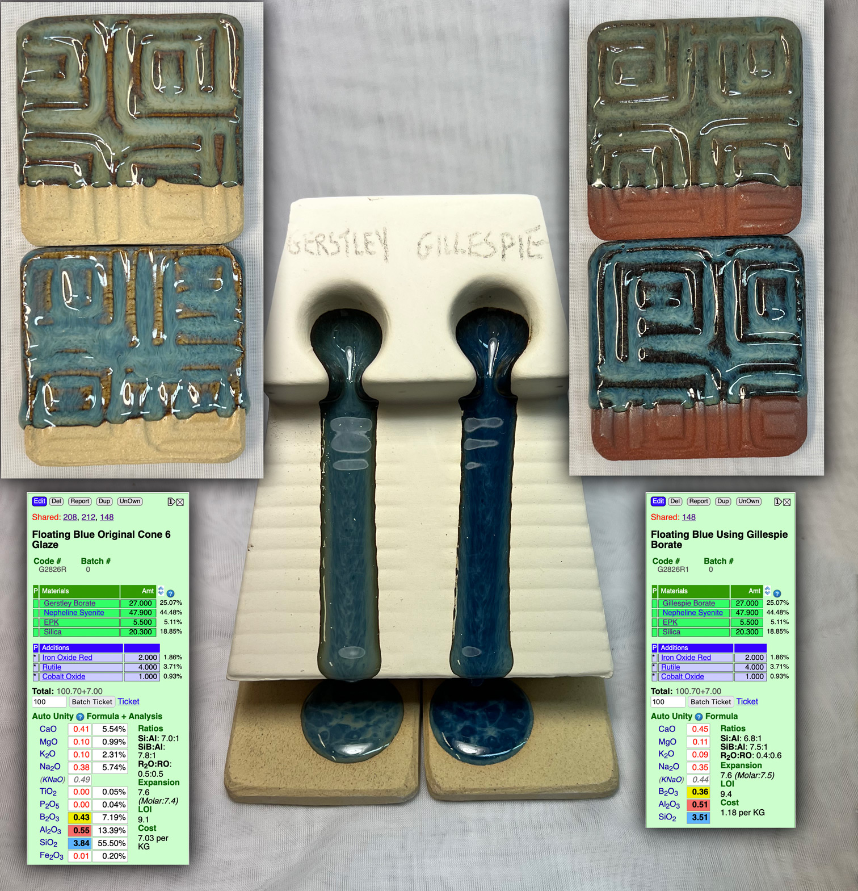
This picture has its own page with more detail, click here to see it.
The original Floating Blue recipe, our code number G2826R, has been popular for 50 years. But also troublesome (because of a fragile mechanism, poor slurry properties and inconsistencies in Gerstley Borate and rutile). Gillespie Borate, it's 2023 apparent successor, appears to solve most of its issues. These specimens of the recipe were fired using the cone 6 C6DHSC schedule. We have "vintage" Gerstley Borate from the 1990s, that is what was used here.
Top left: Floating Blue using Gerstley Borate (GB) (top) and Gillespie Borate bottom on a buff burning body.
Top right: Same but on a red burning body.
Centre: Melt fluidity GLFL test of the two glazes (GB) on the left.
Bottom: The two recipes and their calculated chemistries.
Clearly, the Floating Blue itself is firing greener than usual. And the Gillespie Borate version is much bluer. You may be used to something in between these two. The green tones could likely be restored by a reduction in the cobalt and increase in the iron oxide. The best news is that at 1.47 specific gravity, Gillespie Borate produces a far better slurry, there is no gelling. And no sign of settling into a hard layer.
The chemistry comparison at the bottom highlights some concerns, the difference is not insignificant. B2O3, Al2O3 and SiO2 are all lower (this could be part of the reason for the differences in color also). For better or worse, the melt fluidity is the same: Very high. This is likely because the percentage of Ulexite is higher (that melts better than Colemanite).
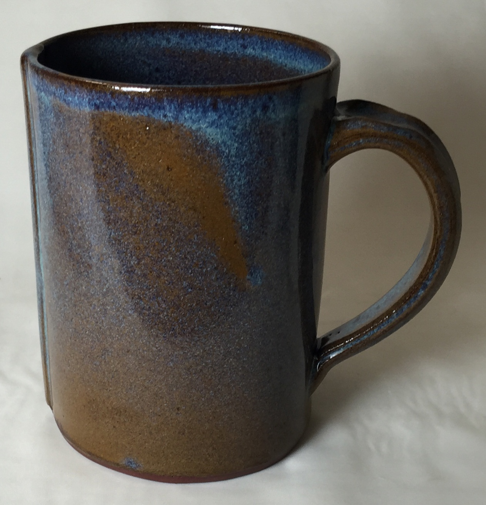
This picture has its own page with more detail, click here to see it.
This mug has thin walls and was bisque fired to cone 04 (so it had a fairly porosity). As a result the glaze went on thinner when it was dipped. This was not evident at the time of glazing but at firing the thinner sections produced the brown areas.
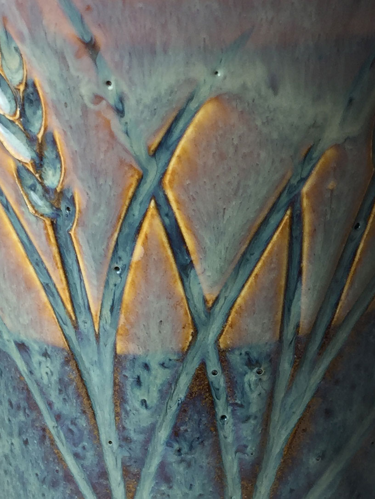
This picture has its own page with more detail, click here to see it.
Rutile blue glazes are difficult, blistering and pinholing are very common. You must get it right on the first firing because pinholes and blisters will likely invade on the second. On the second firing the melt fluidity increases, the glaze runs and creates thicker sections in which the bubbles percolate and just do not heal well during cooling (even if it is slow). When finishing leather hard or dried ware do not disturb thrown surfaces any more than necessary. Make sure that ware is dry before the glaze firing. Do not put the glaze on too thick. Limit the melt fluidity (so it does not pool too thickly in any section). Do not fire too high. Drop and hold firing schedules can help a lot (coupled with a slow cool if needed).
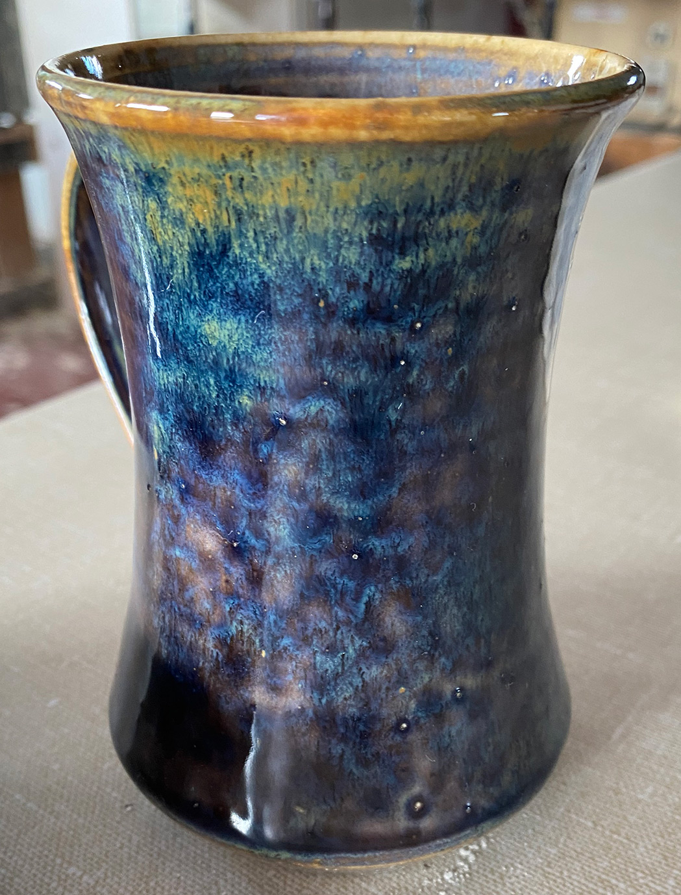
This picture has its own page with more detail, click here to see it.
This blistering problem is common in rutile blue glazes, especially high-temperature - this is not saleable. The reason relates to what it takes to create this kind of vibrant variegated aesthetic: Melting the crap out of the glaze and cooling it just right. This particular one is being fired to cone 11 down to get enough melt fluidity to make it crystallize and phase separate. It seems logical that if the glaze is melting so well it should be able to heal any bubbles that form and break (these are more than usual because the body is being overfired and generating gases). However, the fluidity comes with surface tension that can hold the bubbles intact. Each of these holes in the glaze is a product of that - plus another factor: Cooldown is rapid enough that the melt is not sufficiently fluid to heal after bubble breakage. The potter has been using this glaze for many years with success, but a small change in process or materials has occurred to push it past a tipping point. Solutions? A drop and hold firing. Add a flux (e.g. a little lithium or a frit) to make it melt fluid at cone 10R (where the body generates less gasses of decomposition). Replace any high LOI materials in the glaze itself with other materials to source the same oxides.
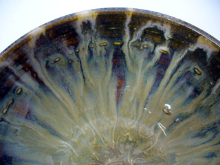
This picture has its own page with more detail, click here to see it.
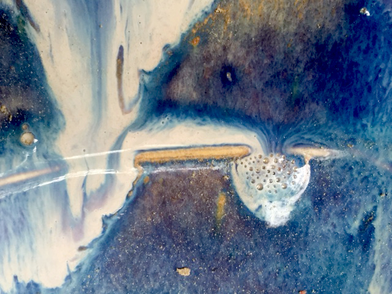
This picture has its own page with more detail, click here to see it.
This is a common problem with these glazes. The visual effect is very compelling but also punishing! Potters experiment with higher bisque firing and soaking during bisque. They try cleaner clay bodies. They employ long hold periods at temperature in the glaze firing. But the problem persists. The solution is actually simpler. These glazes have a high melt fluidity and enough surface tension to hold a bubble static during soaks at temperature (no matter how long you hold it). It is better to cool the kiln somewhat (perhaps 100F) and soak at that temperature. Why? Because the increasing viscosity of the melt overcomes the surface tension that maintains the bubbles. You may need to cool more or less than 100 degrees, but start with that.
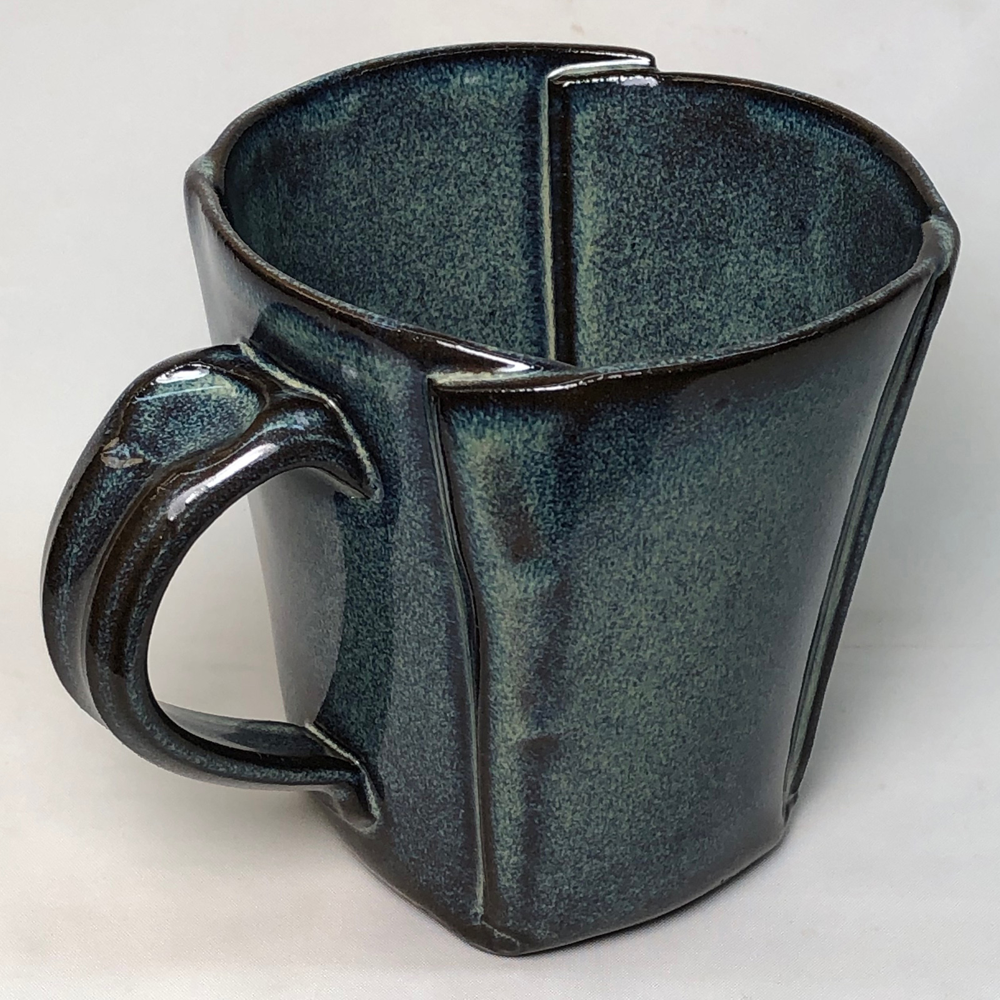
This picture has its own page with more detail, click here to see it.
Glaze is GA6-C Alberta Slip rutile blue. Fired at cone 6. "Mother Nature's porcelain" has 6% Mason 6600 black stain.
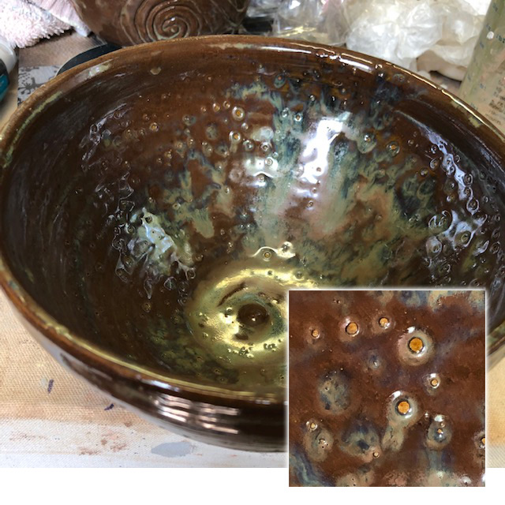
This picture has its own page with more detail, click here to see it.
This rutile glaze is running down on the inside, so it has a high melt fluidity. "High melt fluidity" is another way of saying that it is being overfired to get the visual effect. It is percolating at top temperature (during the temperature-hold period), forming bubbles. There is enough surface tension to maintain them for as long as the temperature is held. To break the bubbles and heal up after them the kiln needs to be cooled to a point where decreasing melt fluidity can overcome the surface tension. Where is that? Only experimentation will demonstrate, try dropping a little more (e.g. 25 degrees) over a series of firings to find a sweet spot. The hold temperature needs to be high enough that the glaze is still fluid enough to run in and heal the residual craters. A typical drop temperature is 100F.
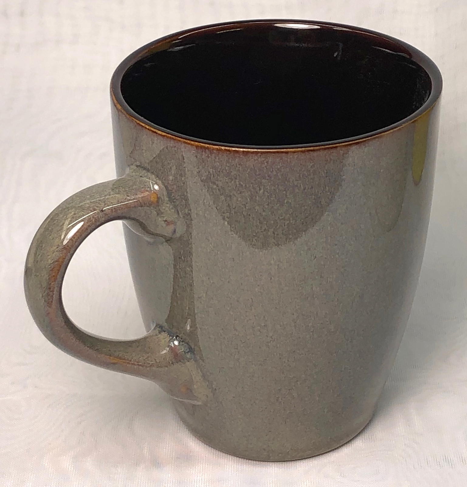
This picture has its own page with more detail, click here to see it.
Likely made in China. The porcelain is bone colored. This will look familiar to many cone 6 potters. The outside glaze looks very similar to an Albany blue, it achieves this efffect by the addition of about 4% rutile. The Alberta Slip recipe GA6-C recipe does this also. The inside likewise looks like an Albany amber transparent (with extra colorant added to darken it somewhat). The Alberta Slip glaze GA6-B could also be used.
|
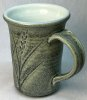 G2571C rutile blue on P700 at cone 10R |
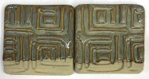 My rutile blue glaze survived a change in frit and rutile |
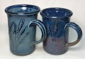 The Magic of Rutile Glazes! |
| Materials |
Ceramic Rutile
Rutile mineral ground to a very fine particle size (e.g. 325 mesh) contributes titanium and iron that colors and variegates ceramic glazes. |
| Glossary |
Phase Separation
Phase separation in glaze melts creates microscopic discontinuities that affect transparency, color variegation, matte surfaces, and reactive glaze effects. |
| Glossary |
Surface Tension
In ceramics, surface tension is discussed in two contexts: The glaze melt and the glaze suspension. In both, the quality of the glaze surface is impacted. |
| Glossary |
Variegation
Ceramic glaze variegation refers to its visual character. This is an overview of the various mechanisms to make glazes dance with color, crystals, highlights, speckles, rivulets, etc. |
| Glossary |
Ceramic Glaze
Ceramic glazes are glasses that have been adjusted to work on and with the clay body they are applied to. |
| Firing Schedules |
Cone 6 Drop-and-Soak Firing Schedule
350F/hr to 2100F, 108/hr to 2200, hold 10 minutes, freefall to 2100, hold 30 minutes, free fall |
| URLs |
https://insight-live.com/insight/share.php?z=oLZXQTy9TR
Floating Blue - Substituting Gerstley Borate The original floating blue recipe shown side-by-side with variations made using frits instead of Gerstley Borate (and titanium and iron instead of rutile). |
PayPal | No tracking, No ads, No paywall, No transient content! Just organized, concise information constantly updated and improved. Was this helpful? Consider supporting me. |
| By Tony Hansen Follow me on |
Buy me a coffee and we can talk